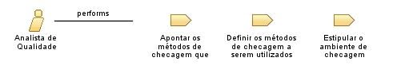

Role: Analista de Qualidade
Relationships

Primary Performs
Apontar os métodos de checagem que estão acessíveis para utilização
Definir os métodos de checagem a serem utilizados para cada produto de trabalho escolhido
Estipular o ambiente de checagem
Modifies
Artefato de critérios para o ambiente de checagem
Artefato que descreve qual método será utilizado para checagem
Catálogo de todos os métodos exequíveis para checagem
Process Usage
ProcessoTrabalho2
>
SP 1.1 Eleger Produtos de Trabalho para Checagem
>
Analista de Qualidade
ProcessoTrabalho2
>
SP 1.2 Estipular o Ambiente de Checagem
>
Analista de Qualidade